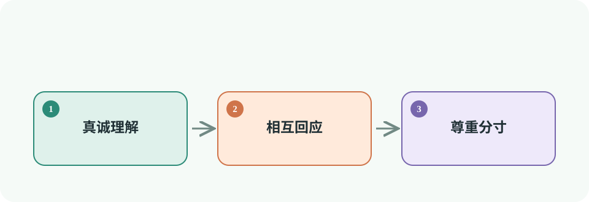
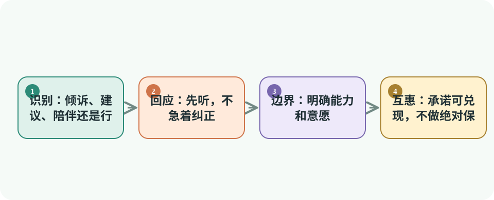

朋友与社交：先听需求，再决定如何帮助
真诚回应不等于立即给建议，更不等于无条件答应
01 · 从一个具体问题开始
朋友说“我最近很烦”，我们常常急着给解决方案，因为建议让自己感觉正在帮忙。但对方此刻可能只是需要有人听完。
先问对方需要哪一种支持，再说清自己能提供的帮助，最后确认双方都自愿且可持续的安排。
02 · 把方法拆成可观察的动作
在朋友关系与客户合作中，识别真实需求、回应方式和承诺边界。 这些动作是教学工具，不是必须逐字套用的公式。

真诚理解
先听对方真实需求：倾诉、建议、陪伴、帮助还是借钱。
相互回应
清楚说出自己可以和不可以做的事；拒绝不需要长篇辩护。
尊重分寸
提供自愿而可兑现的回应，尊重对方不同选择。
03 · 多轮案例：回应怎样随着信息推进
朋友倾诉案例重点不是给出最聪明的建议，而是先确认对方是否需要建议。
朋友倾诉烦恼
朋友工作受挫来找你聊天，目前更想被理解。
沟通目标：先听再问是否需要分析。
我最近真的很烦。
听起来你这阵子在工作上受了不少委屈。我在，想说多少都可以。现在你更需要有人听，还是想让我陪你理一理办法？
你是不是又要给我建议？
你提醒得对，我刚才差点急着给建议。我先不分析，你继续说。
示范回应用于观察结构，不是唯一正确答案。真实沟通应根据事实、关系和风险调整。

04 · 交互拆解：逐步检查每个动作
选择一个动作，观察它解决的具体问题。所有步骤默认都在页面中可读；按钮只是帮助你聚焦其中一层。
怎样把沟通原则变成下一句话
真诚理解
先听对方真实需求：倾诉、建议、陪伴、帮助还是借钱。
检查点：这一轮是否回应了对方刚刚提出的具体问题？
相互回应
清楚说出自己可以和不可以做的事；拒绝不需要长篇辩护。
检查点：这一轮是否回应了对方刚刚提出的具体问题？
尊重分寸
提供自愿而可兑现的回应，尊重对方不同选择。
检查点：这一轮是否回应了对方刚刚提出的具体问题？
当前聚焦第 1 步。
05 · 常见失误与适用边界
- 未经询问就连续给建议。
- 为了维持关系承诺超出自己能力的帮助。
- 对涉及伤害或违法的秘密作绝对保密承诺。
任何沟通框架都不能替代事实核查、正式流程、法律意见或现实安全判断。遇到不确定信息，应明确说出未知并约定核验方式。
06 · 把文章变成一次练习
练习用一句话询问“你现在更想让我听你说，还是一起想办法？”再练习一条不伤害关系的拒绝。
朋友倾诉烦恼
在训练页打开这道案例，先隐藏参考、逐轮作答，再做四维自评。
07 · 来源与说明
本文区分外部框架、项目教学改编和案例示范。引用只支持来源中明确涉及的概念，不代表本文所有表达步骤均经过实验验证。
- Greater Good Science Center · Keys to Good Friendship · https://greatergood.berkeley.edu/article/item/what_are_the_keys_to_good_friendship（Friendship, responsiveness and support）
本文的案例、步骤顺序、互动拆解和四维自评属于言习课程设计。项目自评用于个人纵向复盘，不是经心理测量验证的量表，也不是任何机构的认证课程。